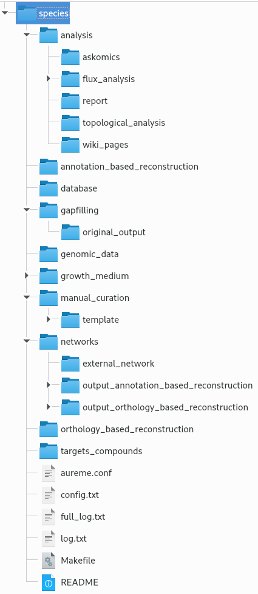
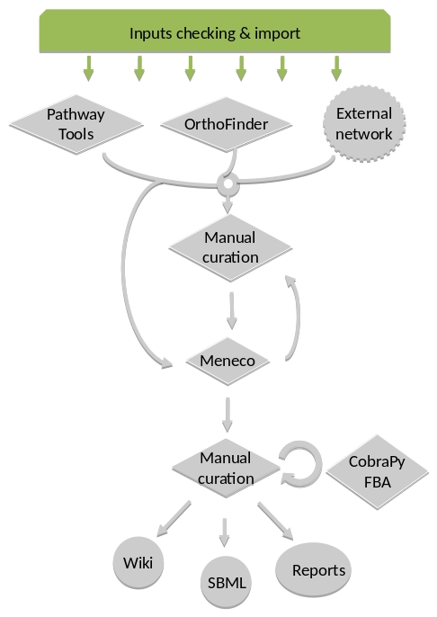

AuReMe documentation
How to use the AuReMe workspace (default workflow)¶
AuReme is deployed in a Docker image. Thanks to this Docker image, all the tools inside the AuReMe workspace are ready to use inside the AuReMe container.
Requirements¶
- Create your Docker container as explained in the previous step Running a Docker container, start the container and go inside.
Start a new study¶
Use the following command to start a new study. Choose an identifier for this study (ex: replace test by your organism name). In order to illustrate this documentation, we will use test as a run identifier.
aureme> aureme --init=test
Now you will find on your own computer (host), in your bridge directory, a folder test with many subdirectory and files. This is your work directory, on which AuReMe is going to run.
Note
Notice that from now until the end of the process, every command will be stored as a log in the bridge > test > log.txt file. The whole output of these commands will also be stored in the bridge > test > full_log.txt file.
If you wish NOT to store such logs, you can use the quiet argument in your command(s). This will redirect the output on the terminal. For example:
aureme> aureme --run=test --cmd="some_command" -q
For further details on the log files, please see the How to manage the log files? chapter.
To get an overview of AuReMe, you can get a sample by using this command.
au> aureme --run=test --sample
Define the reference database¶
The final step is to define which reference database to use. The available databases are listed in your terminal when you create a new study. If needed, use this command to display them again.
aureme> aureme --run=test --cmd="getdb" -q Available database in Aureme: /home/data/database/BIGG/bigg /home/data/database/BIOCYC/METACYC/20.5/metacyc_20.5_enhanced /home/data/database/BIOCYC/METACYC/22.0/metacyc_22.0_enhanced /home/data/database/MODELSEED/modelSeed
This reference database is needed to:
- Be able to match all the identifiers of the entities of metabolic networks.
- Gap-fill the metabolic network in the gap-filling step.
- Uniforms the data in one unique database.
To select one of the above databases, replace the corresponding path in the configuration file: config.txt, in the DATA_BASE variable, or comment the line if you don’t want/can’t use a database.
The config.txt file is stored at the root of your test folder.
The default workflow¶
By default, the AuReMe workspace includes an automatic workflow for metabolic network reconstruction. This workflow runs several pre-installed tools and generates diverse output files. The process can be either run entirely in a single command, or run step by step to personalize it or do some intermediary analysis.
For instance, if you run the draft command (see Merge metabolic networks), it will run all the previous steps automatically as described in the following figure. This figure details the steps of the default workflow.
{kind=link}
Data organization¶
Bridge structure¶
The bridge directory will store all your input data you will provide, and all the result files the workflow is going to create. In this section, all the bridge sub-directories will be described.
analysis: All output files of the analysis processes.
annotation_based_reconstruction: If you want to use
annotated genomes (to run the annotation-based recons-
truction part of the workflow), put here all the output
files of the annotation tool. For instance with
Tools, copy-paste the whole PGDB
Annotation-based reconstruction for more details).
database: If you want to use your own database put in
this folder your database in padmet format, if you have a
sbml convert this file to padmet (see
How to convert files to different formats?). Don’t forget
to update the config.txt file after transforming your
database into the padmet format.
gapfilling/original_output: If you run the metabolic
network reconstruction with gap-filling, will contain all
the output files of gap-filling tools before any post-
process from AuReMe (see the Gap-filling section).
genomic-data: The directory in which to put the
genomic data on your studied organism, that is to say
either a Genbank (GBK_study.gbk) or a proteome
(FAA_study.faa).
growth_medium: Description of the set of metabolites
that is available to initiate the metabolism (growth me-
dium), that is to say the seed compounds (seeds.txt
and artefacts.txt), see How to manage growth medium?
manual_curation: All the files to describe the manual
curation you want to apply on your metabolic network
(either adding, deleting or modifying reactions), see
networks: All the metabolic networks used or created
during the reconstruction process.
networks > external_network: Put here all existing
metabolic networks (.sbml) you want to use. Enables to
merge them with the ones created thanks to other me-
thods (see the Merge metabolic networks section).
networks > output_annotation_based_reconstruction:
Will contain the processed network from the annotation
based reconstruction, after the pre-processing of the
data from the annotation_based_reconstruction
directory (if you filled this one).
networks > output_orthology_based_reconstruction:
Will contain the processed network from the orthology
based reconstruction, after the pre-processing of the
|

data from the orthology_based_
reconstruction directory (if you
have run this part of the workflow).
orthology_based_reconstruction:
If you want to use model organisms
(to run orthology-based reconstruc-
tion part of the workflow), put here
the proteome (FAA_model.faa or
GBK_model.gbk) and the metabolic
network (metabolic_model.sbml)
of your model (see below
more details).
targets_compounds: Description of
the set target compounds (tar-
gets.txt), that is to say metabo-
lites whose production is supposed
to be achieved by the metabolism of
the species under study (compo-
nents of the biomass reaction or
orther metabolites), see the
Gap-filling paragraph.
|
{kind=link}
Provide input files¶
First of all, you have to provide to AuReMe all the input files needed for the different steps you want to run in the workflow. The steps can be optional or run several times, at different phases of the process. However, you have to store the input data for each steps, observing the architecture described above for the bridge directory (see Bridge structure section).
Here is the list of inputs you have to provide to run the pre-set default workflow. If you want to run only part of it, please see the corresponding sections and the chapter How to create a new ‘à-la-carte’ workflow?
External source for reconstruction If you already have one or several external metabolic networks for your studied species and you want to improve them, just copy-paste them (SBML format) in the networks > external_network folder.
/test |-- networks |-- external_network |-- first_manual_network.sbml |-- second_manual_network.sbml |-- ...
Check input files validity¶
This will verify the format and consistency of your data for a
better quality result. Moreover, it will generate all the
supplementary files needed by the workflow tools and put them
into the corresponding folders. For more information about
input files validity see What is checked in my input files?
|
 |
{kind=link}
For this purpose, use this command:
aureme> aureme --run=test --cmd="check_input"
Warning
Always check the validity of the inputs before running any workflow task, and after having put every input files needed for the steps of the workflow.
Orthology-based reconstruction¶
Method: Pantograph¶
Input files:
Required for the orthology-based reconstruction (method: Pantograph):
- Genbank or Proteome of your studied organism (.gbk or .faa)
- Genbank or Proteome of your reference organism (.gbk or .faa)
- Metabolic network of your reference organism (.sbml)
- (option) a dictionary file if genes ids used in metabolic network are
different with gbk/faa (.txt)
Result file:
Orthology-based inputs¶
Put all the available genomic data of the studied organism in the folder genomic_data, either a Genbank (.gbk) or a Fasta (.faa) file.
Warning
Give them these exact names (respectively): GBK_study.gbk and FAA_study.faa.
For each reference organism you want to use, create a subdirectory in the directory orthology_based_reconstruction. Give it the name of your model organism (e.g. model_a).
shell> mkdir orthology_based_reconstruction/model_a
On a Linux operating system, here is the above command to create a new folder named model_a.
- In each folder, put:
- the Genbank file of your model organism, with the exact name
- GBK_model.gbk
OR the proteome of your model organism, with the exact name FAA_model.faa
- the metabolic network of your model organism, with the exact name
- metabolic_model.sbml
- The genome (or proteome) and the metabolic network of your model organism have to contain the same kind genes (or proteins) identifiers to be comparable. If not enough genes (or proteins) are in common between the two files, the process will stop to avoid poor quality data production.If you want to pursue on the process, please provide a dictionary file between the gene (or protein) identifiers of these two files. Name this dictionary *dict_genes.txt*. Here is the dictionary file format asked (tabulation separated values):
Orthology-based run¶
- Important: Remember to check the validity of the inputs before running any workflow task. If you want to run only the orthology-based reconstruction, use now this command:
- To run only the orthology-based reconstruction, use this command:
- IMPORTANT: Because the metabolic network from the reference organism could came from different databases, it’s critical to check the database of each network and if needed convert the network to your reference database selected (see How to use the AuReMe workspace (default workflow) and Define the reference database).
The previous command will check the database of the file output_pantograph_mode_a.sbml, if the database is different for the reference, use the next command to create a mapping file to metacyc database. For more information about sbml mapping see How to map a metabolic network on another database?.
Annotation-based reconstruction¶
Method: Pathway Tools¶
Input files:
- Required for the annotation-based reconstruction (method: Pathway
Tools):
The output of Pathway tools (PGDB folder)
Result file:
/test
|– networks
|– annotation_based_reconstruction
|– pathwaytools
|– output_pathwaytools_genome_a.padmet
|– output_pathwaytools_genome_b.padmet
Annotation-based inputs¶
- Put the output of Pathway Tools (the whole PGDB directory) in the folder *annotation_based_reconstruction*
- If you have run several times Pathway Tools and want to use all of these annotations, just copy-paste the other PGDB folders in the *annotation_based_reconstruction* directory.
Annotation-based run¶
- Important: Remember to check the validity of the inputs before running any workflow task. If you want to run only the annotation-based reconstruction, use now this command:
- To run only the annotation-based reconstruction, use this command.
Merge metabolic networks¶
Input files:
- metabolic networks in the *networks* directory
Result files:
/test
|– netowrks
|– draft.padmet
To merge all available networks from the *networks* directory into one metabolic network, merging all data on the studied species, run this command:
Note that you can also add external metabolic network to create the draft (see Data organization).
IMPORTANT: Before merging your networks, check if not already done if all the sbml are using the reference database. Also check the compartment ids used in each of them, delete and change compartment if need.
For example: if a sbml is using KEGG database but your reference database is metacyc, you will have to map this sbml to create a mapping file which will be used automatically in the merging process.
If a sbml contains a compartment id like ‘C_c’ and another contains ‘c’, although they correspond to the same compartment ‘cytosol’ because of different ids, a compound in ‘C_c’ is not the same as a compound in ‘c’, therefore there will be a loss of connectivity in the network. see How to map a metabolic network on another database? and How to manage metabolic network compartment?
Gap-filling¶
Method: Meneco¶
Input files:
- Required for the gap-filling (method: Meneco):
- A metabolic network reference database (.padmet or .sbml)
(metacyc 20.5, 22.0, BIGG and ModelSeed are available by default)
- Seed and target metabolites (.txt)
- A metabolic network to fill (typically created during the previous
steps)
Result files:
Input¶
- You must have selected a reference database to fill-in the potential gaps in the metabolic network. If it is not done yet, please see Define the reference database.
- Put the seeds file (named seeds.txt) in the *growth_medium* folder. The seed compounds are the description of the set of metabolites that is available to initiate the metabolism (growth medium).
Here is as example of the seed file format:
- Set the growth medium using this command:
For more details on the medium settings, see How to manage growth medium?
WARNING: If you don’t precise any NEW_NETWORK name, the current network will be overwritten.
- Put the target file (named targets.txt) in the *targets_compounds* folder. The targets are metabolites whose production is supposed to be achieved by the metabolism of the species under study (components of the biomass reactions or other metabolites).
Here is as example of the seed file format:
- You will have to indicate which metabolic network you want to gap-fill with the Meneco software. If you want to gap-fill a network created in the previous steps, there is nothing to do. Otherwise, put the network you want to gap-fill (PADMET format) in the *networks* directory.
Run¶
- (optional step) To generate the gap-filling solution run this command:
Note: Do not forget the quotation marks.
It will calculate the gap-filling solution on the network_name network (in the *networks* directory) and put it into the *gapfilling* directory as gapfilling_solution_network_name.csv
- To generate the gap-filled network (and run step 6), run this command:
Note: Do not forget the quotation marks.
It will calculate the gap-filling solution (if it is not yet done) on the network_name network (in the *networks* directory) and put it into the *gapfilling* directory. Then it will generate the metabolic network (new_network_name), completed with the gap-filling solution, in the *networks* directory.
Note that you can first generate the solution, modify it, then generate the gap-filled network.
WARNING: If you don’t precise any NEW_NETWORK name, the current network will be overwritten.
Manual curation¶
This step can be done several times and at any moment of the workflow.
- Describe the manual curation(s) you want to apply by filling the corresponding form(s) as explained below.
Warning
It is highly recommanded to create a new form file (.csv) each time you want to apply other changes, in order to keep tracks of them.
Add a reaction from the database or delete a reaction in a network¶
Copy from the folder manual_curation > template the file reaction_to_add_delete.csv and paste it into the manual_curation directory (this way on Linux operating systems):
aureme> cp manual_curation/template/reaction_to_add_delete.csv manual_curation/my_create_form.csv
Fill this file (follow the exemple in the template).
idRef Comment Action Genes my_rxn Reaction deleted because of x reason delete RXN-12204 Reaction added because of x reason add (gene1 or gene2) RXN-12213 Reaction added because of x reason add gene18 RXN-12224 Reaction added because of x reason add
Create new reaction(s) to add in a network¶
Copy from the folder manual_curation > template the file reaction_creator.csv and paste it into the manual_curation directory (this way on Linux operating systems):
aureme> cp manual_curation/template/reaction_creator.csv manual_curation/my_create_form.csv
Fill this file (follow the exemple in the template).
reaction_id my_rxn comment reaction added because of X reason reversible false linked_gene (gene_a or gene_b) and gene_c #reactant/product #stoichio:compound_id:compart reactant 1.0:compound_a:c reactant 2.0:compound_b:c product 1.0:compound_c:c reaction_id my_rxn_2 comment reaction added because of X reason reversible true linked_gene #reactant/product #stoichio:compound_id:compart reactant 1.0:compound_a:c reactant 2.0:compound_d:c product 1.0:compound_c:c product 1.0:compound_d:c
Apply changes¶
To apply the changes described in the my_form_file.csv form file, run this command:
aureme> aureme --run=test --cmd="curation NETWORK=network_name NEW_NETWORK=new_network_name DATA=my_form_file.csv"
Warning
If you don’t precise any NEW_NETWORK name, the current network will be overwritten.